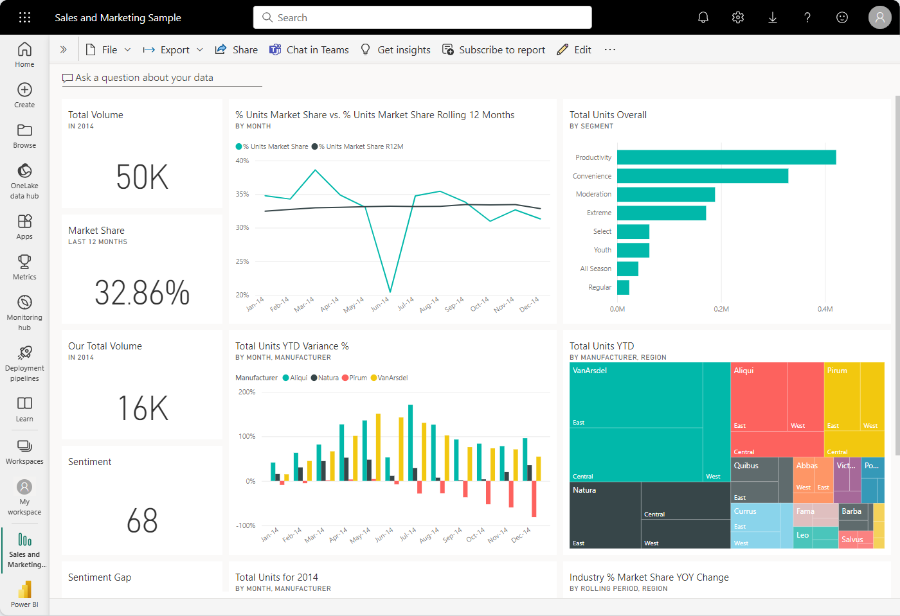
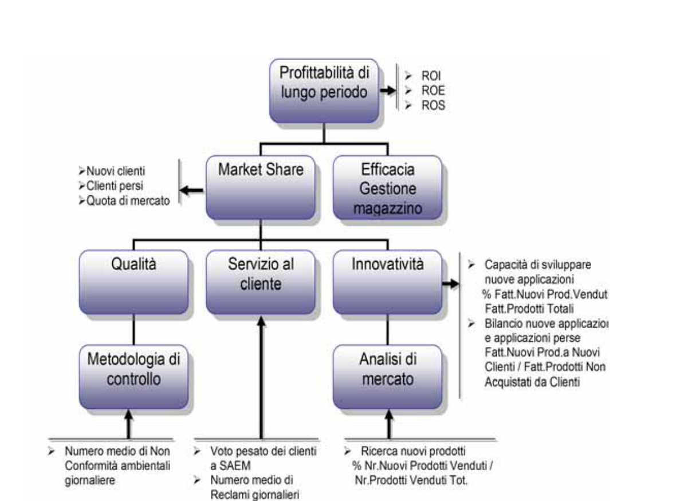
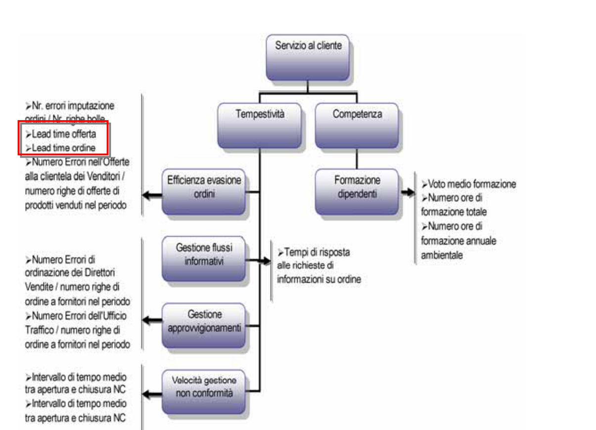
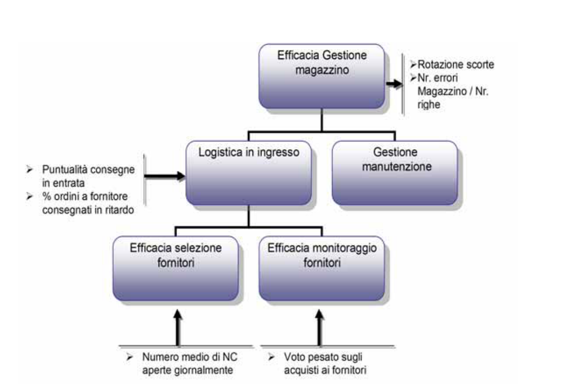

Indice del modulo
- 1 Perché misurare un processo
- 1.1 Controllo, confronto, miglioramento
- 1.2 Efficienza ed efficacia
- 2 Definire un KPI
- 2.1 Formula, unità, frequenza, fonte del dato
- 2.2 Target e soglie
- 2.3 Dal KPI al cruscotto direzionale
- 3 Collegare KPI e variabili
- 3.1 Dai colli di bottiglia agli indicatori di allerta
- 3.2 Esempi per dominio
- 3.3 Balanced Scorecard e allineamento strategico
- 3.4 Il caso SAEM: dall'albero delle determinanti ai KPI
- 4 Laboratorio
1 Perché misurare un processo
Misurare serve a sapere se il processo raggiunge il suo obiettivo, a confrontarne le prestazioni nel tempo e a decidere dove intervenire con dati anziché con impressioni. Senza misura, il miglioramento non è verificabile: non si distingue un risultato occasionale da una prestazione stabile e non si può controllare se una modifica abbia prodotto l'effetto atteso.
Secondo APQC, un KPI è una misura specifica che valuta una componente quantificabile della prestazione a livello di organizzazione, funzione, processo o attività. Il KPI deve essere collegato a un obiettivo o a un fattore critico di successo: un numero isolato non è ancora un indicatore utile alla gestione.
1.1 Controllo, confronto, miglioramento
Il controllo verifica che il processo resti entro limiti attesi; il confronto mette a paragone periodi, sedi, prodotti o organizzazioni; il miglioramento usa la misura come riferimento prima e dopo un intervento. La stessa metrica può quindi servire al controllo operativo e alla valutazione direzionale, purché il perimetro resti esplicito.
Gli indicatori devono essere stabili, definiti in modo univoco e accompagnati da contesto: periodo, volume, popolazione osservata, fonte e soglia. APQC raccomanda di privilegiare misure affidabili, rilevanti per gli obiettivi, osservabili nel tempo, accessibili e familiari agli utilizzatori.
1.2 Efficienza ed efficacia
L'efficacia misura quanto l'output raggiunge il risultato atteso e soddisfa il cliente: tempestività, qualità, completezza, rispetto dello SLA. L'efficienza misura quante risorse servono per produrlo: costo unitario, tempo di lavorazione, produttività, automazione e rilavorazioni.
Un processo può essere efficace ma inefficiente, per esempio quando risolve ogni richiesta ma impiega troppe ore; oppure efficiente ma inefficace, quando chiude rapidamente casi senza risolvere il problema. Un set equilibrato deve quindi includere indicatori di risultato e indicatori diagnostici, evitando di ottimizzare una dimensione a scapito dell'altra.
APQC raggruppa le misure di processo in quattro famiglie: efficacia dei costi, produttività del personale, efficienza del processo e tempo di ciclo. La scelta va adattata all'obiettivo e ai confini del processo.
2 Definire un KPI
Un KPI è una misura scelta perché rappresentativa di un obiettivo importante del processo. Va definito in modo che due persone diverse, con gli stessi dati e lo stesso perimetro, ottengano lo stesso valore e sappiano quale decisione supporta.
È utile distinguere tre termini: una misura è l'osservazione definita della prestazione; una metrica è il risultato quantificato della misura, normalmente espresso come numero, percentuale o rapporto; un KPI è una misura di rilievo strategico o gestionale scelta per seguire un obiettivo. La distinzione è illustrata da APQC.
La misura deve avere un proprietario, una fonte, una regola di calcolo, una frequenza e una decisione associata. Se nessuno agisce quando il valore cambia, l'indicatore è probabilmente descrittivo ma non ancora un KPI di gestione.
2.1 Formula, unità, frequenza, fonte del dato
La scheda di un KPI comprende almeno: nome, obiettivo collegato, formula, numeratore e denominatore, unità di misura, perimetro, frequenza, periodo di riferimento, fonte del dato, responsabile, direzione desiderata e regola per i valori mancanti.
La definizione deve chiarire se il tempo è di lavorazione o di attraversamento, se il costo è totale o unitario e se la percentuale usa tutte le istanze o solo quelle chiuse. ISO 22400-1 fornisce un quadro terminologico per definire e utilizzare KPI; è orientata alle operations manifatturiere, ma i criteri di chiarezza e composizione sono riutilizzabili come riferimento metodologico.
Senza formula, unità, frequenza e fonte l'indicatore è ambiguo e non confrontabile. Una definizione corretta permette di ricostruire il valore, verificarne la qualità e confrontare AS-IS e TO-BE sullo stesso perimetro.
2.2 Target e soglie
Il target è il valore atteso; le soglie delimitano le fasce di attenzione e di allarme. Target e soglie vanno fissati con un riferimento — storico interno, benchmark esterno, requisito contrattuale, SLA o obiettivo strategico — e riesaminati periodicamente.
La direzione desiderata dipende dall'indicatore: per il tasso di risoluzione più alto è normalmente migliore, mentre per il tempo di attesa o il tasso di errore è migliore un valore più basso. Le soglie devono generare un'azione: analisi della causa, riassegnazione di capacità, escalation o revisione del processo.
2.3 Dal KPI al cruscotto direzionale
Un cruscotto direzionale è una vista sintetica che permette di monitorare lo stato dell'organizzazione o di un processo e di decidere dove approfondire. Non è il deposito di tutti i dati: mostra pochi indicatori prioritari, il valore corrente, il confronto con il target, il trend e un collegamento al dettaglio.
Le linee guida Microsoft per i dashboard raccomandano di considerare il pubblico, raccontare la situazione in una schermata, mettere in evidenza le informazioni più importanti e scegliere la visualizzazione in funzione della domanda. Il dashboard Power BI è descritto come una sintesi collegata a report e modelli sottostanti: il cruscotto segnala, il report consente di diagnosticare.
Una struttura didattica efficace comprende: intestazione con periodo e perimetro; schede KPI con valore, target, scostamento e trend; semaforo o soglia per lo stato; grafico di andamento; filtro per dominio o responsabile; link alla scheda processo e alla fonte del dato. L'uso del colore deve essere coerente e non l'unico modo per comunicare lo stato.

Il visual KPI di Power BI richiede un valore, un obiettivo e un asse temporale o di trend. La documentazione Microsoft sui KPI visuali è un esempio concreto di questa relazione tra valore attuale, target, direzione e distanza dall'obiettivo.
3 Collegare KPI e variabili
Gli indicatori più utili sono quelli legati alle variabili critiche del processo individuate nella matrice.
3.1 Dai colli di bottiglia agli indicatori di allerta
Ogni collo di bottiglia suggerisce un indicatore che ne segnala l'aggravarsi: coda in attesa, tempo di giacenza, percentuale di casi in escalation.
Monitorare questi valori permette di intervenire prima che l'effetto si propaghi a valle.
3.2 Esempi per dominio
Per il customer service: tempo medio di risoluzione, risoluzione al primo contatto, soddisfazione del cliente. Per il ciclo attivo di finance: tempo di emissione fattura, percentuale di fatture con errori.
Ogni dominio ha indicatori tipici da adattare al contesto.
La tabella seguente raccoglie, per ciascun Process Group disponibile nei documenti APQC caricati nelle risorse del corso, i KPI proposti e una breve descrizione in italiano.
| Category | Process Group | KPI APQC proposto | Descrizione |
|---|---|---|---|
1.0 Develop Vision and Strategy | 1.1 Define the business concept and long-term vision | Nessun KPI proposto da APQC al livello del Process Group. | |
1.0 Develop Vision and Strategy | 1.2 Develop business strategy | Nessun KPI proposto da APQC al livello del Process Group. | |
1.0 Develop Vision and Strategy | 1.3 Develop and measure strategic initiatives | Nessun KPI proposto da APQC al livello del Process Group. | |
1.0 Develop Vision and Strategy | 1.4 Develop and maintain business models | Nessun KPI proposto da APQC al livello del Process Group. | |
3.0 Market and Sell Products and Services | 3.1 Understand markets, customers, and capabilities | Nessun KPI proposto da APQC al livello del Process Group. | |
3.0 Market and Sell Products and Services | 3.2 Develop marketing strategy | Nessun KPI proposto da APQC al livello del Process Group. | |
3.0 Market and Sell Products and Services | 3.3 Develop and manage marketing plans | 100025 Budget for marketing as a percentage of revenue | Misura la quota percentuale del fenomeno indicato rispetto al totale osservato. |
3.0 Market and Sell Products and Services | 3.3 Develop and manage marketing plans | 100859 Marketing budget per marketing FTE | Misura l'entità del budget rispetto ai ricavi o alle risorse professionali indicate. |
3.0 Market and Sell Products and Services | 3.4 Develop sales strategy | Nessun KPI proposto da APQC al livello del Process Group. | |
3.0 Market and Sell Products and Services | 3.5 Develop and manage sales plans | 110403 Customer attrition/churn rate (3-year) | Misura il tasso con cui si verifica il fenomeno indicato. |
3.0 Market and Sell Products and Services | 3.5 Develop and manage sales plans | 101014 Number of FTEs that perform the process "manage sales orders" per $1 billion revenue | Misura il personale equivalente a tempo pieno impiegato nel processo rispetto al volume indicato. |
3.0 Market and Sell Products and Services | 3.5 Develop and manage sales plans | 101410 Number of sales orders placed per FTE that performs the process "manage sales orders" | Misura la produttività rapportando il volume elaborato a ogni addetto equivalente a tempo pieno. |
3.0 Market and Sell Products and Services | 3.5 Develop and manage sales plans | 102602 Percentage of customers claiming to be satisfied | Misura la quota percentuale del fenomeno indicato rispetto al totale osservato. |
3.0 Market and Sell Products and Services | 3.5 Develop and manage sales plans | 102456 Percentage of qualified leads where the sale is closed | Misura la quota percentuale del fenomeno indicato rispetto al totale osservato. |
3.0 Market and Sell Products and Services | 3.5 Develop and manage sales plans | 103165 Sales budget per sales FTE | Misura l'entità del budget rispetto ai ricavi o alle risorse professionali indicate. |
3.0 Market and Sell Products and Services | 3.5 Develop and manage sales plans | 103664 Total cost to perform the process "manage sales orders" per sales order placed | Misura il costo sostenuto, normalizzato rispetto al volume indicato. |
3.0 Market and Sell Products and Services | 3.5 Develop and manage sales plans | 103988 Total cost to perform the process "manage sales orders" per sales order line item placed | Misura il costo sostenuto, normalizzato rispetto al volume indicato. |
3.0 Market and Sell Products and Services | 3.5 Develop and manage sales plans | 103660 Total cost to perform the process "manage sales orders" per $1,000 revenue | Misura il costo sostenuto, normalizzato rispetto al volume indicato. |
3.0 Market and Sell Products and Services | 3.5 Develop and manage sales plans | 103656 Total cost to perform the process "manage sales orders" per process FTE | Misura il costo sostenuto, normalizzato rispetto al volume indicato. |
4.0 Manage Supply Chain for Physical Products | 4.1 Plan for and align supply chain resources | 100395 Cash-to-cash cycle time in days | Misura il tempo necessario per completare l'operazione indicata. |
4.0 Manage Supply Chain for Physical Products | 4.1 Plan for and align supply chain resources | 100654 Demand/supply planning costs per $1,000 revenue | Misura la prestazione descritta dal KPI nel perimetro del Process Group. |
4.0 Manage Supply Chain for Physical Products | 4.1 Plan for and align supply chain resources | 101218 Number of FTEs that perform the process group "plan for and align supply chain resources" per $1 billion revenue | Misura il personale equivalente a tempo pieno impiegato nel processo rispetto al volume indicato. |
4.0 Manage Supply Chain for Physical Products | 4.1 Plan for and align supply chain resources | 103210 Supply chain management costs per $1,000 revenue | Misura la prestazione descritta dal KPI nel perimetro del Process Group. |
4.0 Manage Supply Chain for Physical Products | 4.2 Procure materials and services | 101214 Number of FTEs that perform the process group "procure materials and services" per $1 billion purchases | Misura il personale equivalente a tempo pieno impiegato nel processo rispetto al volume indicato. |
4.0 Manage Supply Chain for Physical Products | 4.3 Produce/Assemble/Test product | 104786 Total cost to perform the process group "produce/manufacture/deliver product" per $1,000 revenue | Misura il costo sostenuto, normalizzato rispetto al volume indicato. |
4.0 Manage Supply Chain for Physical Products | 4.3 Produce/Assemble/Test product | 104176 Unplanned machine/equipment downtime as a percentage of scheduled run time | Misura la quota percentuale del fenomeno indicato rispetto al totale osservato. |
4.0 Manage Supply Chain for Physical Products | 4.4 Manage logistics and warehousing | 101221 Number of FTEs that perform the process group "manage logistics and warehousing" excluding "manage returns; manage reverse logistics" per $1 billion revenue | Misura il personale equivalente a tempo pieno impiegato nel processo rispetto al volume indicato. |
4.0 Manage Supply Chain for Physical Products | 4.4 Manage logistics and warehousing | 103747 Total cost to perform the process "manage returns; manage reverse logistics" per $1,000 revenue | Misura il costo sostenuto, normalizzato rispetto al volume indicato. |
4.0 Manage Supply Chain for Physical Products | 4.4 Manage logistics and warehousing | 103506 Total cost to perform the process group "manage logistics and warehousing" per $1,000 revenue | Misura il costo sostenuto, normalizzato rispetto al volume indicato. |
5.0 Deliver Services | 5.1 Establish service delivery governance and strategies | Nessun KPI proposto da APQC al livello del Process Group. | |
5.0 Deliver Services | 5.2 Manage service delivery resources | Nessun KPI proposto da APQC al livello del Process Group. | |
5.0 Deliver Services | 5.3 Manage and Operate Service Delivery System | Nessun KPI proposto da APQC al livello del Process Group. | |
5.0 Deliver Services | 5.4 Deliver service to customer | Nessun KPI proposto da APQC al livello del Process Group. | |
6.0 Manage Customer Service | 6.1 Develop customer service strategy | 103585 Total cost to perform 'define customer management strategy' activities per $1,000 revenue | Misura il costo sostenuto, normalizzato rispetto al volume indicato. |
6.0 Manage Customer Service | 6.2 Plan and manage customer service contacts | 100020 Agent schedule adherence | Misura quanto gli operatori rispettano la pianificazione assegnata. |
6.0 Manage Customer Service | 6.2 Plan and manage customer service contacts | 100124 Average call handling time (in seconds) | Misura la rapidità con cui i contatti dei clienti vengono presi in carico o gestiti. |
6.0 Manage Customer Service | 6.2 Plan and manage customer service contacts | 100320 Average seat utilization | Misura il livello di utilizzo della capacità disponibile. |
6.0 Manage Customer Service | 6.2 Plan and manage customer service contacts | 100321 Average speed of answer in seconds for agent queue calls | Misura la rapidità con cui i contatti dei clienti vengono presi in carico o gestiti. |
6.0 Manage Customer Service | 6.2 Plan and manage customer service contacts | 107293 Average cost per inbound contact | Misura il costo sostenuto, normalizzato rispetto al volume indicato. |
6.0 Manage Customer Service | 6.3 Service products after sales | 104856 Warranty accrual rate | Misura il tasso con cui si verifica il fenomeno indicato. |
6.0 Manage Customer Service | 6.3 Service products after sales | 104857 Warranty claims rate | Misura il tasso con cui si verifica il fenomeno indicato. |
6.0 Manage Customer Service | 6.3 Service products after sales | 104858 Warranty cost forecast accuracy | Misura la precisione della previsione rispetto al risultato effettivo. |
6.0 Manage Customer Service | 6.4 Manage product recalls and regulatory audits | Nessun KPI proposto da APQC al livello del Process Group. | |
6.0 Manage Customer Service | 6.5 Evaluate customer service operations and customer satisfaction | Nessun KPI proposto da APQC al livello del Process Group. | |
8.0 Manage Information Technology (IT) | 8.1 Develop and manage IT customer relationships | Nessun KPI proposto da APQC al livello del Process Group. | |
8.0 Manage Information Technology (IT) | 8.2 Develop and manage IT business strategy | Nessun KPI proposto da APQC al livello del Process Group. | |
8.0 Manage Information Technology (IT) | 8.3 Develop and manage IT resilience and risk | 107827 Average time in calendar days to detect cybersecurity incidents | Misura il tempo necessario per completare l'operazione indicata. |
8.0 Manage Information Technology (IT) | 8.3 Develop and manage IT resilience and risk | 107829 Average time in calendar days to respond to and recover from cybersecurity incidents | Misura il tempo necessario per completare l'operazione indicata. |
8.0 Manage Information Technology (IT) | 8.4 Manage information | 100348 Average time in weeks to fulfill a complex information need | Misura il tempo necessario per completare l'operazione indicata. |
8.0 Manage Information Technology (IT) | 8.4 Manage information | 100353 Average time in weeks to fulfill a medium complex information need | Misura il tempo necessario per completare l'operazione indicata. |
8.0 Manage Information Technology (IT) | 8.4 Manage information | 100357 Average time in weeks to fulfill a simple information need | Misura il tempo necessario per completare l'operazione indicata. |
8.0 Manage Information Technology (IT) | 8.4 Manage information | 101320 Number of IT FTEs that perform the process group "manage enterprise information" per $1 billion revenue | Misura la prestazione descritta dal KPI nel perimetro del Process Group. |
8.0 Manage Information Technology (IT) | 8.4 Manage information | 106428 Total cost to perform the process group "manage enterprise information", excluding depreciation/amortization, per process FTE | Misura il costo sostenuto, normalizzato rispetto al volume indicato. |
8.0 Manage Information Technology (IT) | 8.5 Develop and manage services/solutions | 101307 Number of IT FTEs that perform the process group "develop and maintain information technology solutions" per $1 billion revenue | Misura la prestazione descritta dal KPI nel perimetro del Process Group. |
8.0 Manage Information Technology (IT) | 8.5 Develop and manage services/solutions | 100249 Percentage of planned return on investment (ROI) for application development and maintenance projects | Misura la quota percentuale del fenomeno indicato rispetto al totale osservato. |
8.0 Manage Information Technology (IT) | 8.5 Develop and manage services/solutions | 100441 Total cost of IT development and maintenance, excluding depreciation/amortization, per $1,000 revenue | Misura il costo sostenuto, normalizzato rispetto al volume indicato. |
8.0 Manage Information Technology (IT) | 8.5 Develop and manage services/solutions | 104998 Total cost of IT development and maintenance, including depreciation/amortization, per $1,000 revenue | Misura il costo sostenuto, normalizzato rispetto al volume indicato. |
8.0 Manage Information Technology (IT) | 8.6 Deploy services/solutions | 100342 Average time in weeks to deploy a new release into the production environment | Misura il tempo necessario per completare l'operazione indicata. |
8.0 Manage Information Technology (IT) | 8.6 Deploy services/solutions | 100362 Average time in weeks to make a change to the production environment | Misura il tempo necessario per completare l'operazione indicata. |
8.0 Manage Information Technology (IT) | 8.6 Deploy services/solutions | 101302 Number of IT FTEs that perform the process group "deploy information technology solutions" per $1 billion revenue | Misura la prestazione descritta dal KPI nel perimetro del Process Group. |
8.0 Manage Information Technology (IT) | 8.6 Deploy services/solutions | 102794 Percentage of unscheduled outages from changes requests | Misura la quota percentuale del fenomeno indicato rispetto al totale osservato. |
8.0 Manage Information Technology (IT) | 8.6 Deploy services/solutions | 102796 Percentage of unscheduled outages from release introductions | Misura la quota percentuale del fenomeno indicato rispetto al totale osservato. |
8.0 Manage Information Technology (IT) | 8.6 Deploy services/solutions | 103614 Total cost to perform the process group "deploy information technology solutions", including depreciation/amortization, per $1,000 revenue | Misura il costo sostenuto, normalizzato rispetto al volume indicato. |
8.0 Manage Information Technology (IT) | 8.6 Deploy services/solutions | 105004 Total cost to perform the process group "deploy information technology solutions", excluding depreciation/amortization, per $1,000 revenue | Misura il costo sostenuto, normalizzato rispetto al volume indicato. |
8.0 Manage Information Technology (IT) | 8.7 Create and manage support services/solutions | 100333 Average time in hours to resolve a service commitment disruption | Misura il tempo necessario per completare l'operazione indicata. |
8.0 Manage Information Technology (IT) | 8.7 Create and manage support services/solutions | 101300 Number of IT FTEs that perform the process group "deliver and support information technology services" per $1 billion revenue | Misura la prestazione descritta dal KPI nel perimetro del Process Group. |
8.0 Manage Information Technology (IT) | 8.7 Create and manage support services/solutions | 105003 Total cost to perform the process group "deliver and support information technology services", excluding depreciation/amortization, per $1,000 revenue | Misura il costo sostenuto, normalizzato rispetto al volume indicato. |
8.0 Manage Information Technology (IT) | 8.7 Create and manage support services/solutions | 103612 Total cost to perform the process group "deliver and support information technology services", including depreciation/amortization, per $1,000 revenue | Misura il costo sostenuto, normalizzato rispetto al volume indicato. |
9.0 Manage Financial Resources | 9.1 Perform planning and management accounting | 100160 Cycle time in days to complete the annual budget | Misura il tempo necessario per completare l'operazione indicata. |
9.0 Manage Financial Resources | 9.1 Perform planning and management accounting | 100604 Cycle time in days to prepare the financial forecast | Misura il tempo necessario per completare l'operazione indicata. |
9.0 Manage Financial Resources | 9.1 Perform planning and management accounting | 101019 Number of FTEs that perform the process "evaluate and manage financial performance" per $1 billion revenue | Misura il personale equivalente a tempo pieno impiegato nel processo rispetto al volume indicato. |
9.0 Manage Financial Resources | 9.1 Perform planning and management accounting | 101089 Number of FTEs that perform the processes "perform cost accounting and control" and "perform cost management" per $1 billion revenue | Misura il personale equivalente a tempo pieno impiegato nel processo rispetto al volume indicato. |
9.0 Manage Financial Resources | 9.1 Perform planning and management accounting | 101098 Number of FTEs that perform the process "perform planning/budgeting/forecasting" per $1 billion revenue | Misura il personale equivalente a tempo pieno impiegato nel processo rispetto al volume indicato. |
9.0 Manage Financial Resources | 9.1 Perform planning and management accounting | 103679 Total cost to perform the process "evaluate and manage financial performance" per $1,000 revenue | Misura il costo sostenuto, normalizzato rispetto al volume indicato. |
9.0 Manage Financial Resources | 9.1 Perform planning and management accounting | 103802 Total cost to perform the processes "perform cost accounting and control" and "perform cost management" per $1,000 revenue | Misura il costo sostenuto, normalizzato rispetto al volume indicato. |
9.0 Manage Financial Resources | 9.1 Perform planning and management accounting | 105145 Total cost to perform the process group "perform planning and management accounting" per $1,000 revenue | Misura il costo sostenuto, normalizzato rispetto al volume indicato. |
9.0 Manage Financial Resources | 9.1 Perform planning and management accounting | 103813 Total cost to perform the process "perform planning/budgeting/forecasting" per $1,000 revenue | Misura il costo sostenuto, normalizzato rispetto al volume indicato. |
9.0 Manage Financial Resources | 9.2 Perform revenue accounting | 100561 Cycle time in days for credit approval | Misura il tempo necessario per completare l'operazione indicata. |
9.0 Manage Financial Resources | 9.2 Perform revenue accounting | 100581 Cycle time in days from transmission of invoice to receipt of payment | Misura il tempo necessario per completare l'operazione indicata. |
9.0 Manage Financial Resources | 9.2 Perform revenue accounting | 100164 Cycle time in days to generate complete and correct billing data | Misura il tempo necessario per completare l'operazione indicata. |
9.0 Manage Financial Resources | 9.2 Perform revenue accounting | 100178 Days sales outstanding | Misura i giorni medi necessari per trasformare i crediti commerciali in incassi. |
9.0 Manage Financial Resources | 9.2 Perform revenue accounting | 101035 Number of FTEs that perform the process "invoice customer" per $1 billion revenue | Misura il personale equivalente a tempo pieno impiegato nel processo rispetto al volume indicato. |
9.0 Manage Financial Resources | 9.2 Perform revenue accounting | 101048 Number of FTEs that perform the process "manage and process collections" per $1 billion revenue | Misura il personale equivalente a tempo pieno impiegato nel processo rispetto al volume indicato. |
9.0 Manage Financial Resources | 9.2 Perform revenue accounting | 101109 Number of FTEs that perform the process "process accounts receivable (AR)" per $1 billion revenue | Misura il personale equivalente a tempo pieno impiegato nel processo rispetto al volume indicato. |
9.0 Manage Financial Resources | 9.2 Perform revenue accounting | 101114 Number of FTEs that perform the process "process customer credit" per $1 billion revenue | Misura il personale equivalente a tempo pieno impiegato nel processo rispetto al volume indicato. |
9.0 Manage Financial Resources | 9.2 Perform revenue accounting | 101280 Number of invoice line items processed per FTE that performs the process "invoice customer" | Misura la produttività rapportando il volume elaborato a ogni addetto equivalente a tempo pieno. |
9.0 Manage Financial Resources | 9.2 Perform revenue accounting | 101287 Number of invoices processed per FTE that performs the process "invoice customer" | Misura la produttività rapportando il volume elaborato a ogni addetto equivalente a tempo pieno. |
9.0 Manage Financial Resources | 9.2 Perform revenue accounting | 101395 Number of receipts processed per FTE that performs the process "process accounts receivable (AR)" | Misura la produttività rapportando il volume elaborato a ogni addetto equivalente a tempo pieno. |
9.0 Manage Financial Resources | 9.2 Perform revenue accounting | 102142 Percentage of invoice line items processed error free the first time | Misura la quota percentuale del fenomeno indicato rispetto al totale osservato. |
9.0 Manage Financial Resources | 9.2 Perform revenue accounting | 101758 Percentage of total receipts that are processed error free the first time | Misura la quota percentuale del fenomeno indicato rispetto al totale osservato. |
9.0 Manage Financial Resources | 9.2 Perform revenue accounting | 103514 Total cost to perform the order to invoice processes per $1,000 revenue | Misura il costo sostenuto, normalizzato rispetto al volume indicato. |
9.0 Manage Financial Resources | 9.2 Perform revenue accounting | 103702 Total cost to perform the process "invoice customer" per $1,000 revenue | Misura il costo sostenuto, normalizzato rispetto al volume indicato. |
9.0 Manage Financial Resources | 9.2 Perform revenue accounting | 103709 Total cost to perform the process "invoice customer" per invoice processed | Misura il costo sostenuto, normalizzato rispetto al volume indicato. |
9.0 Manage Financial Resources | 9.2 Perform revenue accounting | 103846 Total cost to perform the process "process accounts receivable (AR)" per $1,000 revenue | Misura il costo sostenuto, normalizzato rispetto al volume indicato. |
9.0 Manage Financial Resources | 9.2 Perform revenue accounting | 103850 Total cost to perform the process "process accounts receivable (AR)" per customer receipt | Misura il costo sostenuto, normalizzato rispetto al volume indicato. |
9.0 Manage Financial Resources | 9.2 Perform revenue accounting | 103859 Total cost to perform the process "process customer credit" per $1,000 revenue | Misura il costo sostenuto, normalizzato rispetto al volume indicato. |
9.0 Manage Financial Resources | 9.2 Perform revenue accounting | 103712 Total cost to perform the process "manage and process adjustments/deductions" per $1,000 revenue | Misura il costo sostenuto, normalizzato rispetto al volume indicato. |
9.0 Manage Financial Resources | 9.3 Perform general accounting and reporting | 100597 Cycle time in calendar days from producing monthly flash reports to completing the monthly consolidated financial statements | Misura il tempo necessario per completare l'operazione indicata. |
9.0 Manage Financial Resources | 9.3 Perform general accounting and reporting | 100162 Cycle time in days to complete the monthly consolidated financial statements | Misura il tempo necessario per completare l'operazione indicata. |
9.0 Manage Financial Resources | 9.3 Perform general accounting and reporting | 100594 Cycle time in days from producing annual flash reports to completing consolidated annual financial statements | Misura il tempo necessario per completare l'operazione indicata. |
9.0 Manage Financial Resources | 9.3 Perform general accounting and reporting | 100613 Cycle time in days to perform annual close at the site level | Misura il tempo necessario per completare l'operazione indicata. |
9.0 Manage Financial Resources | 9.3 Perform general accounting and reporting | 100981 Number of FTEs that perform the process group "perform general accounting and reporting" (excluding fixed assets) per $1 billion revenue | Misura il personale equivalente a tempo pieno impiegato nel processo rispetto al volume indicato. |
9.0 Manage Financial Resources | 9.3 Perform general accounting and reporting | 101096 Number of FTEs that perform the process "perform general accounting" per $1 billion revenue | Misura il personale equivalente a tempo pieno impiegato nel processo rispetto al volume indicato. |
9.0 Manage Financial Resources | 9.3 Perform general accounting and reporting | 101091 Number of FTEs that perform the process "perform fixed-asset accounting" per $1 billion revenue | Misura il personale equivalente a tempo pieno impiegato nel processo rispetto al volume indicato. |
9.0 Manage Financial Resources | 9.3 Perform general accounting and reporting | 101765 Percentage of journal entry line items processed error free the first time | Misura la quota percentuale del fenomeno indicato rispetto al totale osservato. |
9.0 Manage Financial Resources | 9.3 Perform general accounting and reporting | 103550 Total cost to perform the process group "perform general accounting and reporting" (excluding fixed assets) per $1,000 revenue | Misura il costo sostenuto, normalizzato rispetto al volume indicato. |
9.0 Manage Financial Resources | 9.3 Perform general accounting and reporting | 103551 Total cost to perform the process group "perform general accounting and reporting" (excluding fixed assets) as a percentage of revenue | Misura il costo sostenuto, normalizzato rispetto al volume indicato. |
9.0 Manage Financial Resources | 9.3 Perform general accounting and reporting | 103809 Total cost to perform the process "perform fixed-asset accounting" per $1,000 revenue | Misura il costo sostenuto, normalizzato rispetto al volume indicato. |
9.0 Manage Financial Resources | 9.3 Perform general accounting and reporting | 103984 Total cost to perform the process "perform financial reporting" per $1,000 revenue | Misura il costo sostenuto, normalizzato rispetto al volume indicato. |
9.0 Manage Financial Resources | 9.3 Perform general accounting and reporting | 103980 Total cost to perform the process "perform general accounting" per journal entry line item | Misura il costo sostenuto, normalizzato rispetto al volume indicato. |
9.0 Manage Financial Resources | 9.3 Perform general accounting and reporting | 103976 Total cost to perform the process "perform general accounting" per $1,000 revenue | Misura il costo sostenuto, normalizzato rispetto al volume indicato. |
9.0 Manage Financial Resources | 9.4 Manage fixed-asset project accounting | 101161 Number of FTEs that perform the process group "manage fixed-asset project accounting" per $1 billion revenue | Misura il personale equivalente a tempo pieno impiegato nel processo rispetto al volume indicato. |
9.0 Manage Financial Resources | 9.4 Manage fixed-asset project accounting | 106275 Total cost to perform the process group "manage fixed-asset project accounting" per $1,000 revenue | Misura il costo sostenuto, normalizzato rispetto al volume indicato. |
9.0 Manage Financial Resources | 9.5 Process payroll | 100152 Cycle time in business days to process the payroll | Misura il tempo necessario per completare l'operazione indicata. |
9.0 Manage Financial Resources | 9.5 Process payroll | 100920 Number of employees paid per FTE that performs the process group "process payroll" | Misura la produttività rapportando il volume elaborato a ogni addetto equivalente a tempo pieno. |
9.0 Manage Financial Resources | 9.5 Process payroll | 101106 Number of FTEs that perform the process group "process payroll" per $1 billion revenue | Misura il personale equivalente a tempo pieno impiegato nel processo rispetto al volume indicato. |
9.0 Manage Financial Resources | 9.5 Process payroll | 101370 Number of payroll disbursements processed per FTE that performs the process "manage pay" | Misura la produttività rapportando il volume elaborato a ogni addetto equivalente a tempo pieno. |
9.0 Manage Financial Resources | 9.5 Process payroll | 101422 Number of time records processed per FTE that performs the process "report time" | Misura la produttività rapportando il volume elaborato a ogni addetto equivalente a tempo pieno. |
9.0 Manage Financial Resources | 9.5 Process payroll | 101958 Percentage of employees receiving payroll disbursements via direct deposit | Misura la quota percentuale del fenomeno indicato rispetto al totale osservato. |
9.0 Manage Financial Resources | 9.5 Process payroll | 102848 Personnel cost to perform the process group "process payroll" per $1,000 revenue | Misura il costo sostenuto, normalizzato rispetto al volume indicato. |
9.0 Manage Financial Resources | 9.5 Process payroll | 103736 Total cost to perform the process "manage pay" per $1,000 revenue | Misura il costo sostenuto, normalizzato rispetto al volume indicato. |
9.0 Manage Financial Resources | 9.5 Process payroll | 103739 Total cost to perform the process "manage pay" per employee paid | Misura il costo sostenuto, normalizzato rispetto al volume indicato. |
9.0 Manage Financial Resources | 9.5 Process payroll | 103883 Total cost to perform the process "process payroll taxes" per $1,000 revenue | Misura il costo sostenuto, normalizzato rispetto al volume indicato. |
9.0 Manage Financial Resources | 9.5 Process payroll | 103885 Total cost to perform the process "process payroll taxes" per employee paid | Misura il costo sostenuto, normalizzato rispetto al volume indicato. |
9.0 Manage Financial Resources | 9.5 Process payroll | 103887 Total cost to perform the process "report time" per $1,000 revenue | Misura il costo sostenuto, normalizzato rispetto al volume indicato. |
9.0 Manage Financial Resources | 9.5 Process payroll | 103890 Total cost to perform the process "report time" per employee paid | Misura il costo sostenuto, normalizzato rispetto al volume indicato. |
9.0 Manage Financial Resources | 9.5 Process payroll | 103945 Total cost to perform the process group "process payroll" per $1,000 revenue | Misura il costo sostenuto, normalizzato rispetto al volume indicato. |
9.0 Manage Financial Resources | 9.5 Process payroll | 103950 Total cost to perform the process group "process payroll" per employee paid | Misura il costo sostenuto, normalizzato rispetto al volume indicato. |
9.0 Manage Financial Resources | 9.6 Process accounts payable and expense reimbursements | 100154 Cycle time in days from receipt of invoice until approved and scheduled for payment | Misura il tempo necessario per completare l'operazione indicata. |
9.0 Manage Financial Resources | 9.6 Process accounts payable and expense reimbursements | 100575 Cycle time in days from receipt of invoice until payment is transmitted | Misura il tempo necessario per completare l'operazione indicata. |
9.0 Manage Financial Resources | 9.6 Process accounts payable and expense reimbursements | 100587 Cycle time in days to approve and schedule T&E reimbursements | Misura il tempo necessario per completare l'operazione indicata. |
9.0 Manage Financial Resources | 9.6 Process accounts payable and expense reimbursements | 100636 Cycle time in hours from receipt of invoice until data entered into the system | Misura il tempo necessario per completare l'operazione indicata. |
9.0 Manage Financial Resources | 9.6 Process accounts payable and expense reimbursements | 100917 Number of disbursements per FTE that performs the process "process accounts payable (AP)" | Misura la produttività rapportando il volume elaborato a ogni addetto equivalente a tempo pieno. |
9.0 Manage Financial Resources | 9.6 Process accounts payable and expense reimbursements | 100952 Number of expense report line items per FTE that performs the process "process expense reimbursements" | Misura la produttività rapportando il volume elaborato a ogni addetto equivalente a tempo pieno. |
9.0 Manage Financial Resources | 9.6 Process accounts payable and expense reimbursements | 101108 Number of FTEs that perform the process "process accounts payable (AP)" per $1 billion revenue | Misura il personale equivalente a tempo pieno impiegato nel processo rispetto al volume indicato. |
9.0 Manage Financial Resources | 9.6 Process accounts payable and expense reimbursements | 101095 Number of FTEs that perform the process group "process accounts payable and expense reimbursements" per $1 billion revenue | Misura il personale equivalente a tempo pieno impiegato nel processo rispetto al volume indicato. |
9.0 Manage Financial Resources | 9.6 Process accounts payable and expense reimbursements | 101290 Number of invoice line items processed per FTE that performs the process "process accounts payable (AP)" | Misura la produttività rapportando il volume elaborato a ogni addetto equivalente a tempo pieno. |
9.0 Manage Financial Resources | 9.6 Process accounts payable and expense reimbursements | 101419 Number of T&E disbursements per "process expense reimbursements" FTE | Misura la prestazione descritta dal KPI nel perimetro del Process Group. |
9.0 Manage Financial Resources | 9.6 Process accounts payable and expense reimbursements | 101944 Percentage of disbursements that are first time error free | Misura la quota percentuale del fenomeno indicato rispetto al totale osservato. |
9.0 Manage Financial Resources | 9.6 Process accounts payable and expense reimbursements | 101995 Percentage of expense report exception line items | Misura la quota percentuale del fenomeno indicato rispetto al totale osservato. |
9.0 Manage Financial Resources | 9.6 Process accounts payable and expense reimbursements | 102139 Percentage of invoice line items paid on time by the business entity | Misura la quota percentuale del fenomeno indicato rispetto al totale osservato. |
9.0 Manage Financial Resources | 9.6 Process accounts payable and expense reimbursements | 102149 Percentage of invoice line items that are matched the first time | Misura la quota percentuale del fenomeno indicato rispetto al totale osservato. |
9.0 Manage Financial Resources | 9.6 Process accounts payable and expense reimbursements | 102146 Percentage of invoice line items received electronically | Misura la quota percentuale del fenomeno indicato rispetto al totale osservato. |
9.0 Manage Financial Resources | 9.6 Process accounts payable and expense reimbursements | 101947 Percentage of discounts available that are taken | Misura la quota percentuale del fenomeno indicato rispetto al totale osservato. |
9.0 Manage Financial Resources | 9.6 Process accounts payable and expense reimbursements | 103971 Total cost to perform the process group "process accounts payable and expense reimbursements" per $1,000 revenue | Misura il costo sostenuto, normalizzato rispetto al volume indicato. |
9.0 Manage Financial Resources | 9.6 Process accounts payable and expense reimbursements | 103831 Total cost to perform the process "process accounts payable (AP)" per $1,000 revenue | Misura il costo sostenuto, normalizzato rispetto al volume indicato. |
9.0 Manage Financial Resources | 9.6 Process accounts payable and expense reimbursements | 103835 Total cost to perform the process "process accounts payable (AP)" per disbursement/payment | Misura il costo sostenuto, normalizzato rispetto al volume indicato. |
9.0 Manage Financial Resources | 9.6 Process accounts payable and expense reimbursements | 103838 Total cost to perform the process "process accounts payable (AP)" per invoice line item processed | Misura il costo sostenuto, normalizzato rispetto al volume indicato. |
9.0 Manage Financial Resources | 9.6 Process accounts payable and expense reimbursements | 100451 Total cost to perform the process "process accounts payable (AP)" per invoice processed | Misura il costo sostenuto, normalizzato rispetto al volume indicato. |
9.0 Manage Financial Resources | 9.6 Process accounts payable and expense reimbursements | 103863 Total cost to perform the process "process expense reimbursements" as a percentage of revenue | Misura il costo sostenuto, normalizzato rispetto al volume indicato. |
9.0 Manage Financial Resources | 9.6 Process accounts payable and expense reimbursements | 103869 Total cost to perform the process "process expense reimbursements" per $1,000 revenue | Misura il costo sostenuto, normalizzato rispetto al volume indicato. |
9.0 Manage Financial Resources | 9.6 Process accounts payable and expense reimbursements | 103866 Total cost to perform the process "Process expense reimbursements" per $1,000 of T&E expenditures | Misura il costo sostenuto, normalizzato rispetto al volume indicato. |
9.0 Manage Financial Resources | 9.6 Process accounts payable and expense reimbursements | 103873 Total cost to perform the process "process expense reimbursements" per T&E disbursement | Misura il costo sostenuto, normalizzato rispetto al volume indicato. |
9.0 Manage Financial Resources | 9.7 Manage treasury operations | 101167 Number of FTEs that perform the process group "manage treasury operations" per $1 billion revenue | Misura il personale equivalente a tempo pieno impiegato nel processo rispetto al volume indicato. |
9.0 Manage Financial Resources | 9.7 Manage treasury operations | 104893 Total cost to perform the process group "manage treasury operations" per $1,000 revenue | Misura il costo sostenuto, normalizzato rispetto al volume indicato. |
9.0 Manage Financial Resources | 9.8 Manage internal controls | 100140 Cycle time in calendar days (including weekends) from identification of change in risk until changes to risk management policies and procedures are completed and ready for deployment/communication/implementation by the business entity | Misura il tempo necessario per completare l'operazione indicata. |
9.0 Manage Financial Resources | 9.8 Manage internal controls | 100144 Cycle time in calendar days (including weekends) from the identification of a control violation until the violation is reported/communicated to the control or process owner | Misura il tempo necessario per completare l'operazione indicata. |
9.0 Manage Financial Resources | 9.8 Manage internal controls | 100148 Cycle time in days from reporting of a control violation until investigation is completed and remediation steps/control changes are developed | Misura il tempo necessario per completare l'operazione indicata. |
9.0 Manage Financial Resources | 9.8 Manage internal controls | 101018 Number of FTEs that perform the process "establish internal controls, policies, and procedures" per $1 billion revenue | Misura il personale equivalente a tempo pieno impiegato nel processo rispetto al volume indicato. |
9.0 Manage Financial Resources | 9.8 Manage internal controls | 101070 Number of FTEs that perform the process "operate controls and monitor compliance with internal controls policies and procedures" per $1 billion revenue | Misura il personale equivalente a tempo pieno impiegato nel processo rispetto al volume indicato. |
9.0 Manage Financial Resources | 9.8 Manage internal controls | 101125 Number of FTEs that perform the process "report on internal controls compliance" per $1 billion revenue | Misura il personale equivalente a tempo pieno impiegato nel processo rispetto al volume indicato. |
9.0 Manage Financial Resources | 9.8 Manage internal controls | 102392 Percentage of primary controls that are automated | Misura la quota percentuale del fenomeno indicato rispetto al totale osservato. |
9.0 Manage Financial Resources | 9.8 Manage internal controls | 103673 Total cost to perform the process "establish internal controls, policies, and procedures" per $1,000 revenue | Misura il costo sostenuto, normalizzato rispetto al volume indicato. |
9.0 Manage Financial Resources | 9.8 Manage internal controls | 104016 Total cost to perform the process group "manage internal controls" per $1,000 revenue | Misura il costo sostenuto, normalizzato rispetto al volume indicato. |
9.0 Manage Financial Resources | 9.9 Manage taxes | 101165 Number of FTEs that perform the process group "manage taxes" per $1 billion revenue | Misura il personale equivalente a tempo pieno impiegato nel processo rispetto al volume indicato. |
9.0 Manage Financial Resources | 9.9 Manage taxes | 104894 Total cost to perform the process group "manage taxes" per $1,000 revenue | Misura il costo sostenuto, normalizzato rispetto al volume indicato. |
9.0 Manage Financial Resources | 9.10 Manage international funds/consolidation | Nessun KPI proposto da APQC al livello del Process Group. | |
9.0 Manage Financial Resources | 9.11 Perform global trade services | Nessun KPI proposto da APQC al livello del Process Group. | |
esempi-apqc/ includono una voce KPI coerente con l'obiettivo e i rischi del processo descritto.3.3 Balanced Scorecard e allineamento strategico
La Balanced Scorecard collega strategia, obiettivi, indicatori, target e iniziative. Il modello di Kaplan e Norton nasce per superare la lettura della performance basata soltanto sui risultati finanziari e propone una vista bilanciata delle dimensioni che creano valore.
Le quattro prospettive tradizionali sono: finanziaria (risultati economici e uso delle risorse), cliente/stakeholder (valore percepito, soddisfazione, fidelizzazione), processi interni (qualità, efficienza, innovazione e tempi) e apprendimento e crescita (competenze, persone, tecnologia e capacità organizzativa). Il Balanced Scorecard Institute descrive le prospettive come lenti complementari per leggere l'organizzazione come sistema.
Per costruire una scorecard si parte da missione e strategia, si definiscono obiettivi per prospettiva, si scelgono pochi KPI, si assegnano target e iniziative e si rendono esplicite le relazioni causa-effetto. Un KPI operativo deve poter risalire a un obiettivo di processo e, quando rilevante, a un obiettivo strategico.
La fonte originaria è l'articolo di Kaplan e Norton su Harvard Business Review. La Balanced Scorecard non sostituisce il cruscotto: definisce la logica strategica e le prospettive; il dashboard presenta in modo operativo i valori e gli scostamenti.
3.4 Il caso SAEM: dall'albero delle determinanti ai KPI
Nel caso SAEM i KPI non sono scelti come un elenco isolato. Partono da un albero delle determinanti che collega la profittabilità di lungo periodo ai risultati strategici, ai fattori critici di successo e infine alle leve operative. A ogni driver vengono associati indicatori capaci di misurarne lo stato e le variazioni. La metrica deve essere intuitiva, comprensibile e calcolabile in modo stabile da chi ne cura la rilevazione.
Il cruscotto aziendale comprendeva già 29 indicatori monitorati periodicamente. Per analizzare la ridefinizione della gestione ordini sono stati messi in evidenza due indicatori ulteriori, lead time offerta e lead time ordine, da leggere insieme alla percentuale di errori di imputazione già presente nel sistema qualità. In questo modo la misura collega la strategia del servizio al cliente alle attività concrete di preparazione dell'offerta, inserimento dell'ordine e invio della conferma.
Il primo ramo mostra come gli indicatori economici e commerciali scendano dalla profittabilità verso Market Share, Qualità, Servizio al cliente e Innovatività. Il ROI (Return on Investment) misura il rendimento del capitale investito, rapportando il risultato operativo agli investimenti impiegati; il ROE (Return on Equity) misura il rendimento del capitale proprio, rapportando l'utile netto al patrimonio netto; il ROS (Return on Sales) misura la redditività delle vendite, rapportando il risultato operativo ai ricavi. Insieme descrivono dimensioni diverse della profittabilità; nuovi clienti, clienti persi e quota di mercato osservano il risultato commerciale; reclami, non conformità e valutazioni dei clienti rendono misurabili qualità e servizio.

Il secondo ramo porta il Servizio al cliente ai driver Tempestività e Competenza. La Tempestività viene osservata attraverso l'efficienza dell'evasione ordini, la gestione dei flussi informativi, gli approvvigionamenti e la velocità di gestione delle non conformità. La Competenza viene invece collegata alla formazione. Il disegno mostra quindi che un KPI appartiene a una leva precisa: per esempio, il tempo di risposta alle richieste di informazioni misura la gestione dei flussi informativi, mentre le ore di formazione misurano la capacità che sostiene il servizio.

Il terzo ramo riguarda l'efficacia della gestione del magazzino. Rotazione delle scorte ed errori di magazzino misurano il risultato del processo; puntualità delle consegne in entrata e quota di ordini a fornitore in ritardo misurano la logistica in ingresso; non conformità aperte e voto ponderato sugli acquisti supportano rispettivamente la selezione e il monitoraggio dei fornitori.

L'applicazione dei KPI può essere letta su tre livelli:
- Attività: il dato nasce durante un'operazione osservabile, come inserire una riga d'ordine, inviare un'offerta, confermare un ordine o rispondere a una richiesta.
- Processo: i valori delle singole istanze vengono aggregati per valutare l'efficienza del sottoprocesso di inserimento ordini o del processo di evasione.
- Obiettivo: il risultato di processo viene ricondotto a tempestività, servizio al cliente, quota di mercato e profittabilità. Il KPI permette quindi di verificare se una modifica operativa produce l'effetto strategico atteso.
| KPI | Definizione operativa | Applicazione nel caso SAEM |
|---|---|---|
| % errori di imputazione ordini | numero errori di imputazione / numero righe delle bolle, espresso in percentuale e rilevato trimestralmente. Target: 0%. | Misura la qualità dell'attività manuale di inserimento delle righe e, per aggregazione, l'efficienza dell'ufficio commerciale. Gli errori riguardano soprattutto quantità e codici articolo; le conversioni manuali delle unità di misura possono generare correzioni, ricircoli e costi. Il valore osservato più recente è 0,10%, superiore al livello ottimale dello 0,05%. |
| Lead time offerta | Media del tempo fra l'inizio della quotazione e l'invio dell'offerta, espressa in ore e rilevata trimestralmente. Target: risposta immediata. | Attraversa inserimento degli articoli, eventuale autorizzazione del Direttore Vendite e invio al cliente. Consente di distinguere il tempo di lavorazione dal tempo di attesa: un'offerta media richiede circa dieci minuti di inserimento, ma la stampa e l'invio differiti possono portare il tempo complessivo fino a un giorno. |
| Lead time ordine | Media del tempo fra ricevimento dell'ordine e invio della conferma, espressa in giorni e rilevata trimestralmente sugli ordini che prevedono conferma. Target: risposta immediata. | Misura end-to-end ricezione, smistamento, verifica, inserimento e conferma. Nel processo AS-IS varia indicativamente da 1,5 a 5 giorni, anche per le attese legate alla disponibilità e alle date comunicate dai fornitori. Nel TO-BE telematico il cliente inserisce direttamente l'ordine e il sistema restituisce subito il codice: per un ordine medio il tempo stimato scende a circa 20 minuti. |
Il confronto mostra perché un KPI deve avere confini coerenti con il processo. Il lead time ordine non misura soltanto la digitazione: comprende anche code, passaggi organizzativi, verifiche di disponibilità e conferma. La percentuale di errori, invece, nasce a livello di riga ma valuta l'affidabilità dell'intero sottoprocesso. Nel TO-BE la tecnologia modifica attività, responsabilità e tempi; perciò il miglioramento atteso deve essere verificato mantenendo stabile la definizione dell'indicatore e confrontando AS-IS e TO-BE sullo stesso perimetro.
4 Laboratorio
Definire due o tre KPI per il processo in analisi. Per ciascuno specificare formula, unità, frequenza, fonte del dato e un target motivato.
Punti chiave
- La misura rende il miglioramento verificabile e sostituisce le impressioni con i dati.
- Efficacia ed efficienza sono dimensioni distinte: un processo può eccellere in una e non nell'altra.
- Un KPI è definito solo se ha formula, unità, frequenza, fonte del dato, proprietario e decisione associata; target e soglie richiedono un riferimento.
- Un cruscotto direzionale sintetizza pochi indicatori con valore, target, scostamento e trend e rimanda al dettaglio per la diagnosi.
- La Balanced Scorecard collega KPI e obiettivi attraverso le prospettive finanziaria, cliente, processi interni e apprendimento/crescita.
- Gli indicatori più utili nascono dalle variabili critiche e dai colli di bottiglia della matrice.
- Nel caso SAEM l'albero delle determinanti collega KPI operativi, risultati di processo e obiettivi strategici; il confronto AS-IS/TO-BE mantiene stabile il perimetro della misura.